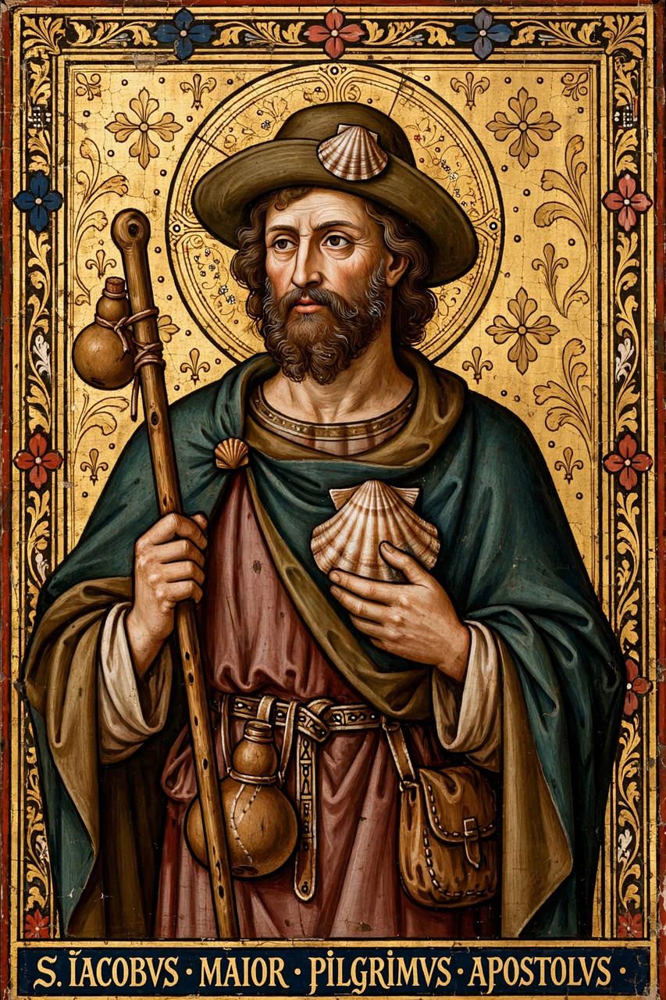

| Saint James the Great | |
|---|---|
 | |
| Apostle and Martyr | |
| Born | Bethsaida, Galilee |
| Died | AD 44, Jerusalem, Judaea |
| Feast | 25 July |
| Patronage | Spain; pilgrims; soldiers |
James the Great (died AD 44) was one of the Twelve Apostles of Jesus. According to the New Testament, he was the second of the apostles to die after Judas Iscariot replaced by Matthias, and the first to be martyred. He was the son of Zebedee and Salome, and brother of John the Apostle. He is also called James, son of Zebedee to distinguish him from James, son of Alphaeus, and James the Just.
James was a fisherman on the Sea of Galilee when Jesus called him and his brother John to follow him. With Peter they formed an inner circle present at events such as the Transfiguration and the agony in the Garden of Gethsemane. Jesus nicknamed the brothers Boanerges, "sons of thunder". The Acts of the Apostles records that Herod Agrippa I had James executed by the sword around AD 44 — the only apostle whose martyrdom is recorded in the New Testament.
Later tradition held that James preached the gospel in Spain and that after his death his body was carried by boat to Galicia, where it was rediscovered in the 9th century at the site of Santiago de Compostela. The cathedral there became one of the great pilgrimage destinations of medieval Christendom, and the pilgrimage route, the Way of St James (Camino de Santiago), remains popular today. His symbols include the scallop shell and the pilgrim's staff.
James is the patron saint of Spain, where he is known as Santiago, and his feast day is celebrated on 25 July. In Spanish tradition he appears as Santiago Matamoros ("St James the Moor-slayer"), said to have miraculously intervened at the legendary Battle of Clavijo.